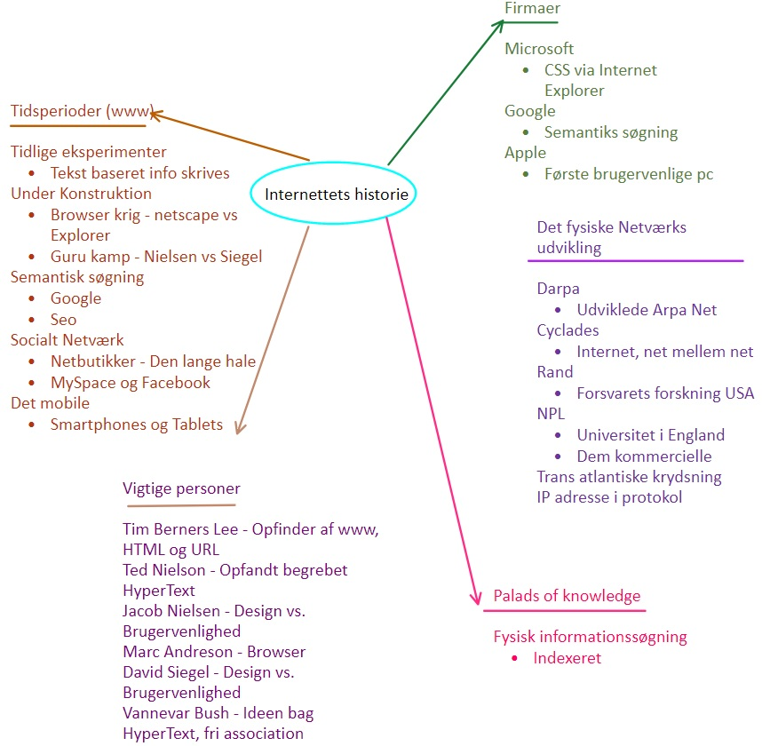

Internettets historie ~ et mind map


Et mindmap
Jeg lavede et mindmap over internettes historie, for at få et overblik over udviklingen.Hvornår begyndte det? -og hvor er vi i dag?
Set fra i dag har der været 5 perioder i internettes historie;| De tidlige eksperimenter | Fra 1993 |
| Under konstruktion | Fra 1996 |
| Den semantiske søgning | Fra 2000 |
| Det sociale netværk | Fra 2003 |
| Det mobile web | Fra 2010 |
De tidlige eksperimenter
I denne periode var det mest data der lagde på nettet, og design var ikke en af de vigtigeste komponenter i websitet. Derfor hed det funktionalitet, funktionalitet og mere funktionalitet. Det var ofte på universiteters internet man gik ind på disse hjemmesider, da det var største base for folk der havde brug for viden.
Under konstruktion
I denne periode begynder man at ligge mere vægt på design, og der udvikler sig derfra en "krig" på internettet. Hjemmesiden ligge mere vægt på design end usability. I denne periode bliver det også mere normalt for private at have deres egen hjemmeside. Dette førte til at folk kunne lave deres egen webshops.
Reklamer, pop ups begynder også at komme frem i denne periode. Så under denne periode blive internettet en mere integreret del af hverdagen, og er ikke længere kun til at finde informationer på.
Den semantiske søgning
I denne periode udviklede Google en pageranker, der begyndte at bedømme hjemmesider ud fra hvordan de var blevet kodet. Defor blev mange hjemmesider søgemaskineoptimeret, ved brugen af semantiske tags. I denne periode solg CSS igennem som den mest brugte design element til websites.
Det sociale netværk
I denne periode bliver vi mere og mere sociale på nettet, vi begynder at skrive sammen, kommentere på hinandens indlæg mm. Firmaer begynder her at finde deres målgrupper på nettet, og laver reklamer og medier kun til brug på nettet.
Det mobile web
Det er hvad vi kender i dag, mobilen har næsten overtaget vores liv, og derfor bliver alle ting på internettet optimeret til at passe vores små venner. I denne periode bliver det også mere og mere populært at streame musik, film mm.
Kilder;
Billede - Banner; https://www.pexels.com/photo/time-alarm-clock-alarm-clock-100733/